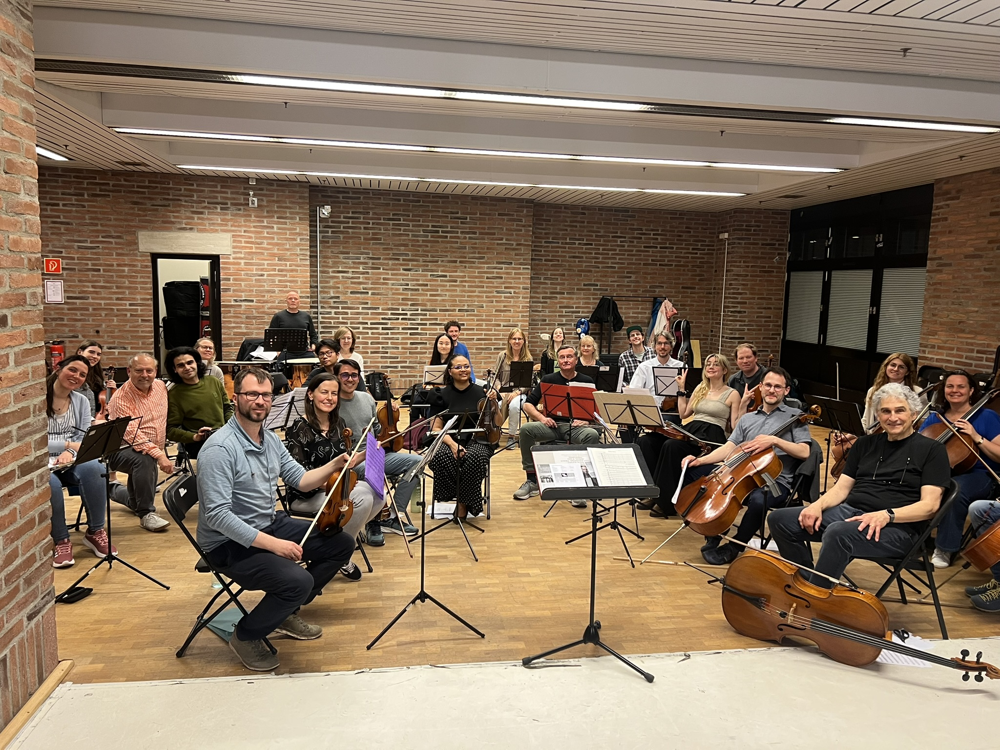

About Me
Mohamed Nagy is a Ph.D. candidate in Electrical and Computer Engineering at Khalifa University. His research focuses on perception for autonomous systems, with a particular emphasis on multi-object tracking. His work spans robotics perception, visual understanding, state estimation, uncertainty modeling, sensor fusion, and computationally efficient algorithms for autonomous vehicles and mobile robots.
His current research aims to develop robust perception systems capable of operating reliably in challenging real-world environments, including long-term occlusions, noisy observations, detection failures, and highly dynamic scenes. His work combines probabilistic state estimation with modern perception techniques to improve the accuracy, robustness, and efficiency of autonomous systems.
More broadly, he is interested in building trustworthy robotic perception systems inspired by human perception, with the long-term goal of enabling autonomous agents to understand and interact with complex environments as naturally and reliably as humans.
Research Interests
📚 Featured Publications
Polycepta: Object-Centric Appearance Estimation for Multi-Object Tracking
IEEE Transactions on Image Processing (TIP), Under Review, June 2026
💡 Key Contribution: Introduce appearance estimation and visual memory construction learning in multi-object tracking
RobMOT: Robust 3D Multi-Object Tracking by Observational Noise and State Estimation Drift Mitigation on LiDAR Point Cloud
IEEE Transactions on Intelligent Transportation Systems, Jul. 2025
⚡ Performance: Introduces a temporal validation mechanism for tracked objects, mitigating trajectory drift, achieving tracking robustness over long occlusions at 3221 FPS on a single CPU.
News
Polycepta: Object-Centric Appearance Estimation for Multi-Object Tracking is now available as a preprint.
Joined the Institute of Automotive Technology at the Technical University of Munich as a Visiting Researcher. (Profile)
The temporal validation mechanism for AI hallucination in multi-object tracking was presented at the NSF IAIFI Workshop at Harvard University. (Talk)
RobMOT is published in IEEE Transactions on Intelligent Transportation Systems.
Motion Dynamics Kalman Filter is now available as a preprint.
My talk, Tackling AI Hallucination and Occlusion Challenges in Object Tracking , presented at XPANSE (Abu Dhabi), is now available.
Selected among 50 graduate students worldwide to attend the fully funded RobotX Summer School at ETH Zurich.
DFR-FastMOT is published in the IEEE International Conference on Robotics and Automation (ICRA 2023).
🚀 Project Demonstrations

RobMOT Node Performance on EDGAR (TUM) in Munich, Germany
ROS2 node of the last version of the RobMOT research implemented for the EDGAR autonomous vehicle at TUM, Munich, Germany. The RobMOT node combines the trajectory validation mechanism (From paper 1) and the motion dynamics Kalman filter (MD-KF) (from paper 2). The MD-KF is also used to identify objects that are stationary (stable objects). RobMOT's performance is better at handling long occlusions than the 3D tracker in the Autoware stack.

RobMOT: Robust Multi-object Tracking by Observational Noise and State Estimation Drift Mitigation on LiDAR Point Cloud
This work addresses limitations in 3D tracking-by-detection methods, focusing on legitimate trajectory identification and reducing state estimation drift in Kalman filters. Traditional threshold-based filtering struggles with distant and occluded objects, leading to false positives. We propose a novel track validity mechanism and multi-stage observational gating process that reduces ghost tracks and enhances tracking performance. This work effectively tracks distant objects and prolonged occlusions. It operates at 3221 FPS on a single CPU for real-time tracking.

Autonomous Robot Navigation in Rough Terrain
I participated in a robotics summer school at ETH Zurich, where I collaborated with my team to develop a full-stack robot designed for a Segway platform. Our technological stack encompassed perception, mapping, localization, state estimation, navigation, and trajectory optimization. We focused on a ground robot and successfully enabled it to navigate within a designated area, identify objects on the map, thoroughly explore the surroundings, and safely depart from the location.

Visual Motion Multi-Object Tracking Based on Kalman Filter Using Event Camera
The primary objective is to monitor multiple targets based on their visual motion captured through an event camera. The Kalman filter has been reformulated and adapted for visual motion estimation. Based on the current observed motion of an object, the proposed Kalman filter predicts the next visual motion state for that object. The results demonstrated its effectiveness for nearby objects, but its performance was less satisfactory with objects at a distance.

Odor Diffusion Simulation and Mapping Using Aerial Drone
The goal of this project is to investigate outdoor odor diffusion. Initially, a particle shooter is developed to simulate odor dispersion in the Gazebo environment, with the scattering of particles governed by a predefined diffusion model. Additionally, a custom air monitoring sensor is integrated into an AutoPilot drone to measure particle concentration per cubic meter. Ultimately, the drone employs advanced algorithms to detect sources of odor diffusion within the environment. The implementation is carried out in C++.

DFR-FastMOT: Multi-Object Association and Tracking Using Sensor Fusion for Autonomous Vehicles
This is my thesis project focused on multi-object tracking for self-driving cars. The project employs a combination of camera, LiDAR, and IMU sensors to continuously track objects within 2D camera frames and a 3D LiDAR point cloud. The trajectories of the objects are derived using a Kalman Filter, assuming constant acceleration. This project has been developed from the ground up (End-to-End) using C/C++, with a portion submitted to ICRA 2023 under the title DFR-FastMOT framework.

3D Map Roughness Estimation using LiDAR for Mobile Robots
In this project, I developed a 3D adjustable grid map for roughness estimation utilizing LiDAR point clouds. The grid consists of small rectangles surrounding the robot, with each rectangle calculating a roughness score based on the point cloud it contains. To accomplish this, I employed the RANSAC algorithm along with the Euclidean distance property. The implementation was done using C++.

3D Drivable Surface Detection and 2D Localization Map Using stereo camera
In this project, I employed the Modified UNET model to extract drivable surfaces through semantic segmentation, alongside the RANSAC algorithm to map these surfaces into 3D space using a stereo camera (Zed2) depth map. Additionally, the results of the semantic segmentation were used to identify obstacles on the surface. Finally, I leveraged the camera's pose information to create a 2D map of the mobile robot's trajectory and accurately localize the robot within that map.

Semantic Segmentation|Modified U-Net Model
This research project explores the limitations of deep learning architectures in the context of semantic segmentation. I begin by implementing a U-Net model architecture from the ground up and subsequently enhance the architecture in response to the identified performance weaknesses on the Mapillary Vistas dataset. The final architecture incorporates a downsampling and upsampling hierarchy derived from the U-Net model, skip connections from DenseNet, and parallel convolutional layers featuring kernel sizes inspired by the InceptionV3 model.
Publications
Polycepta: Object-Centric Appearance Estimation for Multi-Object Tracking (2026)
The tracking-by-detection paradigm in multi-object tracking (MOT) typically relies on static appearance descriptors to complement motion estimation. However, these descriptors are frame-independent, limiting their robustness as visual cues. Since such descriptors are often obtained from computationally intensive pretrained backbones, real-time MOT systems frequently abandon appearance cues altogether and rely solely on motion prediction and geometric association. In this work, we introduce Polycepta, an object-centric appearance state estimation framework that reformulates appearance modeling as a recursive estimation problem rather than a frame-wise matching task. Polycepta constructs and continuously updates an independent appearance state for each tracked object, enabling future appearance representations to be estimated from accumulated observations. Polycepta is encouraged to learn the appearance-state construction of object-specific representations rather than memorize them through a proposed learning strategy, enabling appearance estimation for unseen classes. A key property of Polycepta is that the quality of appearance estimation improves as object states evolve during inference. While conventional appearance descriptors remain static or degrade over time, Polycepta progressively refines appearance estimates as additional observations are accumulated. Extensive experiments on KITTI, the Waymo Open Dataset, and MOT17 demonstrate consistent reductions in identity switches and improvements in tracking performance when integrated into the tracking-by-detection pipelines. Polycepta operates at 90.57 Hz and delivers state-of-the-art performance on the KITTI benchmark when integrated into the RobMOT framework, achieving a MOTA of 92.27\%.
Towards Accurate State Estimation: Kalman Filter Incorporating Motion Dynamics for 3D Multi-Object Tracking (2025)
This work addresses the critical lack of precision in state estimation in the Kalman filter for 3D multi-object tracking (MOT) and the ongoing challenge of selecting the appropriate motion model. Existing literature commonly relies on constant motion models for estimating the states of objects, neglecting the complex motion dynamics unique to each object. Consequently, trajectory division and imprecise object localization arise, especially under occlusion conditions. The core of these challenges lies in the limitations of the current Kalman filter formulation, which fails to account for the variability of motion dynamics as objects navigate their environments. This work introduces a novel formulation of the Kalman filter that incorporates motion dynamics, allowing the motion model to adaptively adjust according to changes in the object's movement. The proposed Kalman filter substantially improves state estimation, localization, and trajectory prediction compared to the traditional Kalman filter. This is reflected in tracking performance that surpasses recent benchmarks on the KITTI and Waymo Open Datasets, with margins of 0.56\% and 0.81\% in higher order tracking accuracy (HOTA) and multi-object tracking accuracy (MOTA), respectively. Furthermore, the proposed Kalman filter consistently outperforms the baseline across various detectors. Additionally, it shows an enhanced capability in managing long occlusions compared to the baseline Kalman filter, achieving margins of 1.22\% in higher order tracking accuracy (HOTA) and 1.55\% in multi-object tracking accuracy (MOTA) on the KITTI dataset. The formulation's efficiency is evident, with an additional processing time of only approximately 0.078 ms per frame, ensuring its applicability in real-time applications.
RobMOT: Robust 3D Multi-Object Tracking by Observational Noise and State Estimation Drift Mitigation on LiDAR Point Cloud (2024)
This paper addresses limitations in 3D tracking-by-detection methods, particularly in identifying legitimate trajectories and reducing state estimation drift in Kalman filters. Existing methods often use threshold-based filtering for detection scores, which can fail for distant and occluded objects, leading to false positives. To tackle this, we propose a novel track validity mechanism and multi-stage observational gating process, significantly reducing ghost tracks and enhancing tracking performance. Our method achieves a 29.47\% improvement in Multi-Object Tracking Accuracy (MOTA) on the KITTI validation dataset with the Second detector. Additionally, a refined Kalman filter term reduces localization noise, improving higher-order tracking accuracy (HOTA) by 4.8\%. The online framework, RobMOT, outperforms state-of-the-art methods across multiple detectors, with HOTA improvements of up to 3.92\% on the KITTI testing dataset and 8.7\% on the validation dataset, while achieving low identity switch scores. RobMOT excels in challenging scenarios, tracking distant objects and prolonged occlusions, with a 1.77\% MOTA improvement on the Waymo Open dataset, and operates at a remarkable 3221 FPS on a single CPU, proving its efficiency for real-time multi-object tracking.
DFR-FastMOT: Detection Failure Resistant Tracker for Fast Multi-Object Tracking Based on Sensor Fusion (2023)
Persistent multi-object tracking (MOT) allows autonomous vehicles to navigate safely in highly dynamic environments. One of the well-known challenges in MOT is object occlusion when an object becomes unobservant for subsequent frames. The current MOT methods store objects information, such as trajectories, in internal memory to recover the objects after occlusions. However, they retain short-term memory to save computational time and avoid slowing down the MOT method. As a result, they lose track of objects in some occlusion scenarios, particularly long ones. In this paper, we propose DFR-FastMOT, a light MOT method that uses data from a camera and LiDAR sensors and relies on an algebraic formulation for object association and fusion. The formulation boosts the computational time and permits long-term memory that tackles more occlusion scenarios. Our method shows outstanding tracking performance over recent learning and non-learning benchmarks with about 3% and 4% margin in MOTA, respectively. Also, we conduct extensive experiments that simulate occlusion phenomena by employing detectors with various distortion levels. The proposed solution enables superior performance under various distortion levels in detection over current state-of-art methods. Our framework processes about 7,763 frames in 1.48 seconds, which is seven times faster than recent benchmarks. The framework will be available at https://github.com/MohamedNagyMostafa/DFR-FastMOT.
The 4th Industrial Revolution in Coronavirus Pandemic Era (2020)
Analysis of technological advancements and challenges during the COVID-19 pandemic, focusing on the intersection of healthcare and Industry 4.0 technologies.
A Modified Method for Detecting DDoS Attacks Based on Artificial Neural Networks (2019)
Novel neural network architecture for improved detection of distributed denial-of-service attacks in network security systems.
🎤 Talks & Presentations

Mohamed Nagy #NSF_IAIFI | AI Hallucination in Multi-Object Tracking at Harvard University
My contributed talk at Harvard University during the NSF AI Institute for Artificial Intelligence and Fundamental Interactions (IAIFI) summer workshop

Tackling AI Hallucination and Occlusion Challenges in Object Tracking
My science pitch in XPANCE 2024 held in Abu Dhabi UAE
🎨 Hobbies & Interests
Music

I have a deep passion for listening to diverse music, from movie soundtracks to stunning orchestral pieces and popular songs. Music has always been a significant part of my life. As a child, I loved to play Piano and imitate the melodies and rhythms I heard. This early fascination with music blossomed as I grew older and took up the Violin. Playing an instrument is a beautiful way to translate words and emotions into melodic expressions.
Meditation & Reflection
I used to have some time a day for meditation, preferring nature areas where I could hear wind, birds' sounds, and the leaves of trees. I use it for relaxation and reflection.
Strategic Puzzles
I like to solve puzzles! When I was a kid, I used to play strategic games (War), make strategic plans, and anticipate outcomes.
Swimming & Running
My favorite sports are swimming and running. I like to spend some time swimming and snorkeling once in a while. I also like outdoor running, particularly during sunset.
🏛️ Institutional Affiliations
Khalifa University
MSc in Computer Science & Ph.D. Candidate in Electrical & Computer Engineering
2021-Present
Technical University of Munich (TUM)
Visiting Researcher at the Institute of Automotive Technology as a Visiting Researcher
Jan. 2026 – May 2026
Harvard University
NSF AI Institute for Artificial Intelligence and Fundamental Interactions Workshop (Participant & Speaker)
2025

ETH Zurich
Robotics Summer School Participant
2023
Udacity
Mentor
2020-2024
Google Developers Group
Machine Learning Speaker
2018-2020
One Million Arab Coders
Android Tutor
2018
South African National Space Agency
Research Assistant
2018

Android Development Intern
2016
Helwan University
Bachelor's in Mathematics and Computer Science
2014-2018